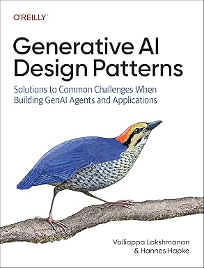
Generative AI Design Patterns
32 patterns for building reliable generative AI applications and agents.
Books & publications
I write about building AI systems, putting data to work, and applying machine learning to scientific problems.
Browse by topic. Newest publications appear first within each topic.

32 patterns for building reliable generative AI applications and agents.
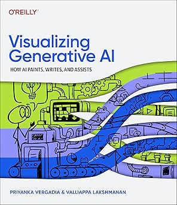
An illustrated introduction to generative AI, its capabilities, and business applications.
View on Amazon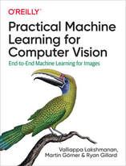
Build, train, deploy, and explain machine learning models for images.
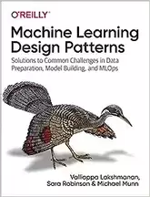
30 patterns for recurring challenges across the machine learning lifecycle.
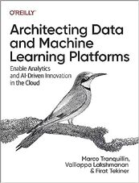
Design and modernize cloud data platforms, from ingestion to activation.
View on Amazon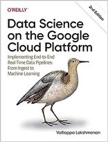
Build an end-to-end data pipeline using Google Cloud’s data and ML tools.
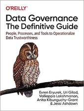
Put data governance into practice through people, processes, and technology.
View on Amazon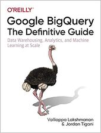
Data warehousing, analytics, and machine learning at scale with BigQuery.
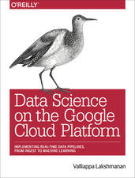
The original guide to building cloud data pipelines for practical business decisions.
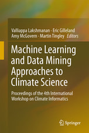
Research from the Fourth International Workshop on Climate Informatics.
View on Amazon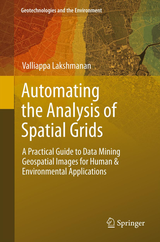
Practical techniques for extracting information from radar, satellite, and other gridded data.